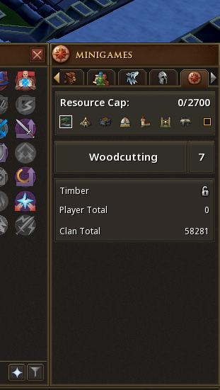
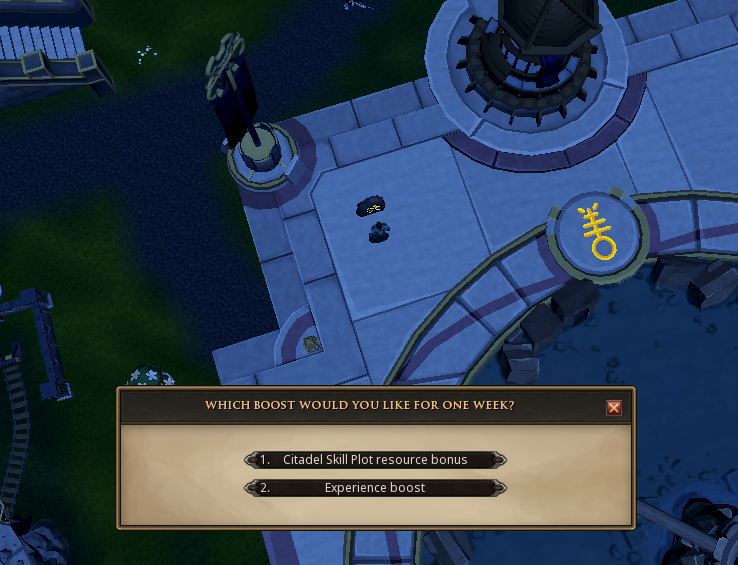
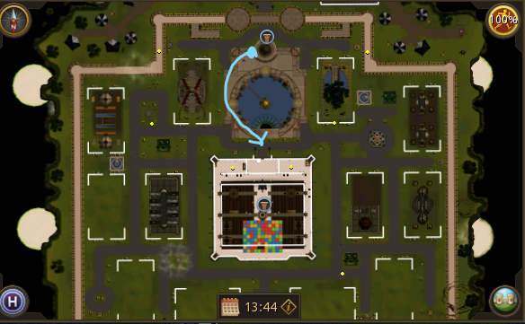
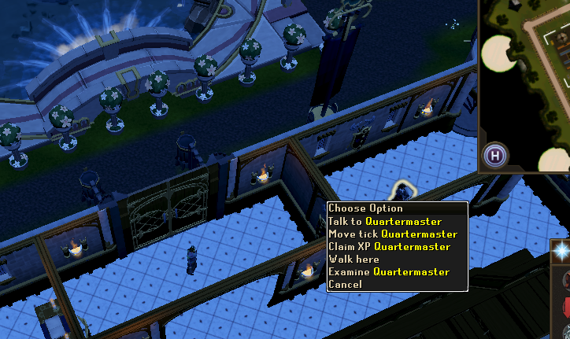

1
Get to the Citadel
Travel to the Clan Citadel and enter through the portal.

Head south-east from the Grand Exchange towards the Clan Camp.
Clan Guide
New to capping? No problem. Follow the steps below and you'll be done in no time.
Go to the Citadel, activate your boost, skill until you hit your weekly cap, claim your rewards and let us know you're done.
Travel to the Clan Citadel and enter through the portal.
Head south-east from the Grand Exchange towards the Clan Camp.
Once you're inside the Citadel, open the Citadel map and teleport to the town square.

At the town square, find the Avatar Control Stone. Right-click it and select Attune to Avatar.

Look to the right of your minimap and open the Citadel interface.

The purple T icons on the map are teleport points. Use these to quickly travel between skilling areas.

Start skilling at your chosen plot. As you gather resources, your weekly cap progress will increase.

Return to the Avatar Control Stone and choose Experience boost.

Head into the Citadel Keep in the centre of the map.

Find the Quartermaster, right-click them and select Claim XP.

If your RuneMetrics profile is public, your cap may be logged automatically.
If you don't appear in the log, post in #citadel-cap so we know you've completed it.
Capping gives you an XP boost that can help throughout RuneScape.
Capping increases your Clan Fealty, which improves Citadel XP rates.
Claim additional XP from the Quartermaster after capping.
Your gathered resources help maintain and improve the Clan Citadel.